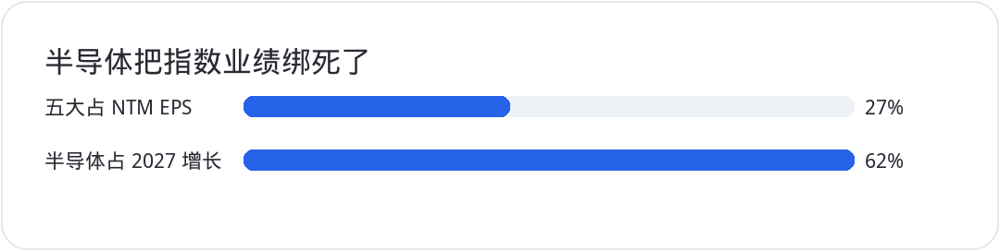
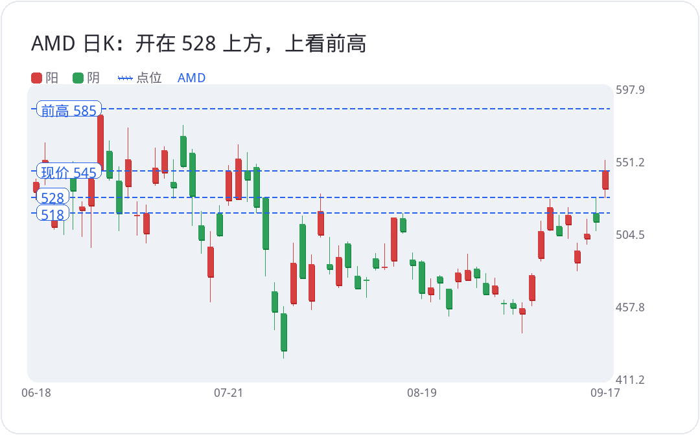
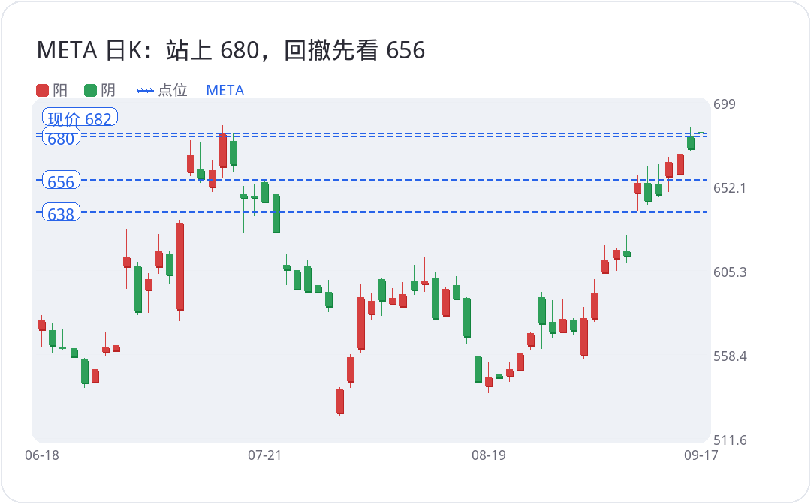

<div style="margin:0;padding:0;background:#f5f7fa;color:#2a2a34;font-size:16px;line-height:1.9;font-family:-apple-system,BlinkMacSystemFont,'SF Pro Text','PingFang SC','Hiragino Sans GB','Microsoft YaHei',Arial,sans-serif;font-variant-numeric:tabular-nums;font-feature-settings:'tnum' 1,'lnum' 1;text-align:left !important;text-align-last:left;letter-spacing:0;word-spacing:normal;white-space:normal;word-break:normal;box-sizing:border-box;"><div style="margin:0;background:#ffffff;padding:28px 22px 44px 22px;box-sizing:border-box;text-align:left !important;text-align-last:left;letter-spacing:0;word-spacing:normal;white-space:normal;word-break:normal;"><p style="display:block;width:100%;margin:0 0 12px 0;padding:0;color:#2763e9;font-size:10px;line-height:1.6;font-weight:650;letter-spacing:0.12em;text-align:center !important;text-align-last:center;word-spacing:normal;white-space:normal;word-break:normal;box-sizing:border-box;">美股 · 期权 · 资讯 · 观点</p><div style="margin:0 0 30px 0;padding:0;text-align:center !important;text-align-last:center;word-spacing:normal;white-space:normal;word-break:normal;box-sizing:border-box;"></div><div style="margin:0 0 0 0;padding:28px 0 0 0;text-align:left !important;text-align-last:left;letter-spacing:0;word-spacing:normal;white-space:normal;word-break:normal;box-sizing:border-box;"><div style="margin:0 0 12px 0;padding:0;text-align:left !important;line-height:1.2;border:0;display:flex;align-items:center;gap:10px;text-align-last:left;letter-spacing:0;word-spacing:normal;white-space:normal;word-break:normal;box-sizing:border-box;"><span style="display:inline-block;flex:0 0 auto;vertical-align:middle;color:#2763e9;font-size:12px;font-weight:850;letter-spacing:0.12em;line-height:1.2;text-transform:uppercase;border:0;box-sizing:border-box;">0 · FOCUS</span><span style="display:block;flex:1 1 auto;min-width:36px;vertical-align:middle;height:1px;margin:0 0 2px 0;background:#2763e9;line-height:1px;font-size:0;border:0;box-sizing:border-box;"></span></div><p style="margin:0 0 16px 0;padding:0;color:#2a2a34;font-size:22px;line-height:1.45;font-weight:850;text-align:left !important;letter-spacing:0;text-align-last:left;word-spacing:normal;white-space:normal;word-break:normal;box-sizing:border-box;">四大齐涨，先当三巫日的一部分</p><p style="margin:0 0 16px 0;padding:0;color:#454550;font-size:16px;line-height:1.9;font-weight:400;text-align:left !important;letter-spacing:0;word-spacing:normal;white-space:normal;word-break:normal;text-align-last:left;box-sizing:border-box;">周四四大指数全收红，纳指领涨。<strong style="color:#2a2a34;font-weight:700;box-sizing:border-box;">SPX</strong> 收 7638，涨 1.1%；纳指收 26418，涨 1.7%；道指涨 0.6%；罗素涨 0.5%。标普 11 个板块大约 9 个收红，科技大约涨 2.2%，把指数抬起来。金融和必需消费走弱，通讯也不强。盘面顺，稳定性仍差。最近几天本来就是猫一天狗一天。明天三巫日，周四开始的放量、平仓会搅在一起。这根阳线先当成结算周波动的一部分，方向还要等。预计明天过程可以很热闹，结果往往平静。</p><p style="margin:0 0 16px 0;padding:0;color:#454550;font-size:16px;line-height:1.9;font-weight:400;text-align:left !important;letter-spacing:0;word-spacing:normal;white-space:normal;word-break:normal;text-align-last:left;box-sizing:border-box;">截止 9 月 12 日当周初请失业 19.6 万，低于 20.8 万的预期，也低于前值 20.6 万。续请失业 173 万，低于 178 万的预期，前值下修到 176.9 万。劳动力这一侧暂时给美联储留出盯通胀的空间。别把指数涨幅直接读成趋势。</p><p style="margin:0 0 16px 0;padding:0;color:#454550;font-size:16px;line-height:1.9;font-weight:400;text-align:left !important;letter-spacing:0;word-spacing:normal;white-space:normal;word-break:normal;text-align-last:left;box-sizing:border-box;">费城半导体现货涨 3.1%，30 只成分股 29 涨 1 跌。<strong style="color:#2a2a34;font-weight:700;box-sizing:border-box;">SOXX</strong> 收 519，涨 3.4%，高 520、低 515，又停在下降趋势线附近。和上周五蹭线几乎同一幕。上周五收在 527 一带，周一被周末那套放缓人工智能开发的说法砸下来，<strong style="color:#2a2a34;font-weight:700;box-sizing:border-box;">SOXX</strong> 一天跌 5.6%。猫一天狗一天还没完。四大科技也跟着抬：<strong style="color:#2a2a34;font-weight:700;box-sizing:border-box;">AMZN</strong> 涨 2.1%，<strong style="color:#2a2a34;font-weight:700;box-sizing:border-box;">MSFT</strong> 涨 1.5%，<strong style="color:#2a2a34;font-weight:700;box-sizing:border-box;">GOOGL</strong> 涨 1.3%。<strong style="color:#2a2a34;font-weight:700;box-sizing:border-box;">NVDA</strong> 收 219，相对前收涨 2.5%，当天只在 217 到 220 的窄缝里走，量能谈不上扩张。</p></div><div style="margin:30px 0 0 0;padding:28px 0 0 0;text-align:left !important;text-align-last:left;letter-spacing:0;word-spacing:normal;white-space:normal;word-break:normal;box-sizing:border-box;"><div style="margin:0 0 12px 0;padding:0;text-align:left !important;line-height:1.2;border:0;display:flex;align-items:center;gap:10px;text-align-last:left;letter-spacing:0;word-spacing:normal;white-space:normal;word-break:normal;box-sizing:border-box;"><span style="display:inline-block;flex:0 0 auto;vertical-align:middle;color:#2763e9;font-size:12px;font-weight:850;letter-spacing:0.12em;line-height:1.2;text-transform:uppercase;border:0;box-sizing:border-box;">1 · SEMIS</span><span style="display:block;flex:1 1 auto;min-width:36px;vertical-align:middle;height:1px;margin:0 0 2px 0;background:#2763e9;line-height:1px;font-size:0;border:0;box-sizing:border-box;"></span></div><p style="margin:0 0 16px 0;padding:0;color:#2a2a34;font-size:22px;line-height:1.45;font-weight:850;text-align:left !important;letter-spacing:0;text-align-last:left;word-spacing:normal;white-space:normal;word-break:normal;box-sizing:border-box;">大盘要涨，半导体不能掉链子</p><p style="margin:0 0 16px 0;padding:0;color:#454550;font-size:16px;line-height:1.9;font-weight:400;text-align:left !important;letter-spacing:0;word-spacing:normal;white-space:normal;word-break:normal;text-align-last:left;box-sizing:border-box;">华尔街把半导体和设备的业绩说得很好，就只能按很好来交易。想让大盘上，半导体至少得横得住。半导体独自大跌、其他板块把指数抬上去，这条现在走不通。</p><p style="margin:0 0 16px 0;padding:0;color:#454550;font-size:16px;line-height:1.9;font-weight:400;text-align:left !important;letter-spacing:0;word-spacing:normal;white-space:normal;word-break:normal;text-align-last:left;box-sizing:border-box;">五家最大的公司已经占到标普 500 未来 12 个月每股收益的 27%，历史新高。2027 年更极端：半导体加设备，贡献标普每股收益增长的 62%。同一个行业在推六成的预期增长。按现在这套 EPS 去交易，2026 年能做的前瞻大致落在 7000 到 8500。没有半导体这块，谁来兑现上沿？大盘要涨，半导体至少不能跌；大盘要大涨，半导体必须一起推。它独自回撤，剩下的板块撑不起这层预期。</p><p style="margin:4px 0 16px 0;padding:0;text-align:center !important;text-align-last:center;word-spacing:normal;white-space:normal;word-break:normal;box-sizing:border-box;"></p><p style="margin:0 0 16px 0;padding:0;color:#454550;font-size:16px;line-height:1.9;font-weight:400;text-align:left !important;letter-spacing:0;word-spacing:normal;white-space:normal;word-break:normal;text-align-last:left;box-sizing:border-box;">容错只剩一层皮。实际盈利一旦相对预测 miss，下调会很快传到指数。这个阶段还在重仓半导体和人工智能相关、边走边看的，每个季度兑现就是还能不能继续炒的开关。高增长预测什么时候结束，现在看不清。周末那三家放缓的说法为什么杀伤力大，就在这里：花钱的人一松口，这层共识 EPS 就要往下改。<strong style="color:#2a2a34;font-weight:700;box-sizing:border-box;">META</strong> 和 <strong style="color:#2a2a34;font-weight:700;box-sizing:border-box;">NVDA</strong> 随后把“不同意放缓”说清楚，盘面才能把周一的坑往回填。</p><p style="margin:0 0 16px 0;padding:0;color:#454550;font-size:16px;line-height:1.9;font-weight:400;text-align:left !important;letter-spacing:0;word-spacing:normal;white-space:normal;word-break:normal;text-align-last:left;box-sizing:border-box;">资本开支仍是底座。超大规模这边，美银把 2027 年增速收到三成出头，比 2026 年接近翻倍的扩张明显放缓，相对更早高盛大约 31% 的框略高。小幅下调，不是砍半。花钱的人还在举债往半导体里砸。四大科技没有突然宣布 2027 年资本开支比现在共识降得更狠，模型就还有效。没宣布之前，先判它一定大幅降速，是猜测。</p><p style="margin:0 0 16px 0;padding:0;color:#454550;font-size:16px;line-height:1.9;font-weight:400;text-align:left !important;letter-spacing:0;word-spacing:normal;white-space:normal;word-break:normal;text-align-last:left;box-sizing:border-box;">费半回到前高 655，仍是这个周期里的大概率。现在 <strong style="color:#2a2a34;font-weight:700;box-sizing:border-box;">SOXX</strong> 在 519，离 655 还有一截。655 不该被当成这个周期的终点。路径不好画。9 月、10 月波动大，11 月还有中期选举，三名参议员那份人工智能监管草案还没摊到桌面上。不清楚它是细则还是框架，也不清楚什么时候被推出来。短期不确定性在这里。</p><p style="margin:0 0 16px 0;padding:0;color:#454550;font-size:16px;line-height:1.9;font-weight:400;text-align:left !important;letter-spacing:0;word-spacing:normal;white-space:normal;word-break:normal;text-align-last:left;box-sizing:border-box;">半导体不亮，大盘扛不住。道路可以先砸一个坑，过几个月再走前高。对冲基金需要波动来赚钱，不喜欢十几天单边融涨，上下甩才好做。指数型、共同基金另说。今天涨，<strong style="color:#2a2a34;font-weight:700;box-sizing:border-box;">SOXX</strong> 还是停在 510 到 520 这一带，区间没打开，不能把阳线当成突破。</p></div><div style="margin:30px 0 0 0;padding:28px 0 0 0;text-align:left !important;text-align-last:left;letter-spacing:0;word-spacing:normal;white-space:normal;word-break:normal;box-sizing:border-box;"><div style="margin:0 0 12px 0;padding:0;text-align:left !important;line-height:1.2;border:0;display:flex;align-items:center;gap:10px;text-align-last:left;letter-spacing:0;word-spacing:normal;white-space:normal;word-break:normal;box-sizing:border-box;"><span style="display:inline-block;flex:0 0 auto;vertical-align:middle;color:#2763e9;font-size:12px;font-weight:850;letter-spacing:0.12em;line-height:1.2;text-transform:uppercase;border:0;box-sizing:border-box;">2 · FOCUS</span><span style="display:block;flex:1 1 auto;min-width:36px;vertical-align:middle;height:1px;margin:0 0 2px 0;background:#2763e9;line-height:1px;font-size:0;border:0;box-sizing:border-box;"></span></div><p style="margin:0 0 16px 0;padding:0;color:#2a2a34;font-size:22px;line-height:1.45;font-weight:850;text-align:left !important;letter-spacing:0;text-align-last:left;word-spacing:normal;white-space:normal;word-break:normal;box-sizing:border-box;">QQQ 卡在 724，罗素帮不上忙</p><p style="margin:0 0 16px 0;padding:0;color:#454550;font-size:16px;line-height:1.9;font-weight:400;text-align:left !important;letter-spacing:0;word-spacing:normal;white-space:normal;word-break:normal;text-align-last:left;box-sizing:border-box;"><strong style="color:#2a2a34;font-weight:700;box-sizing:border-box;">QQQ</strong> 还在 702 到 724。收 717，高 718，没有回到 724。过了 724，动能才够去看 734 一带的前高。现在上方仍有被套筹码。周四放量，至少一半更可能是三巫日期权和正股的互动，不是趋势已经切换。位置中性，先别把阳线读成直奔前高。</p><p style="margin:0 0 16px 0;padding:0;color:#454550;font-size:16px;line-height:1.9;font-weight:400;text-align:left !important;letter-spacing:0;word-spacing:normal;white-space:normal;word-break:normal;text-align-last:left;box-sizing:border-box;"><strong style="color:#2a2a34;font-weight:700;box-sizing:border-box;">IWM</strong> 更弱。288 已经跌破，6 月以来将近三个月的头部成立。中小盘、金融和金融科技权重高，暂时帮不上大盘。收 285，盘中高 288 又失败。回 301 还差大约五个点出头。真要回去，其他指数大概率已经接近前高。罗素现在是拖后腿的那一侧。</p><p style="margin:0 0 16px 0;padding:0;color:#454550;font-size:16px;line-height:1.9;font-weight:400;text-align:left !important;letter-spacing:0;word-spacing:normal;white-space:normal;word-break:normal;text-align-last:left;box-sizing:border-box;">费半也还差一口气。放量跳空、或者一根超大阳线把趋势线甩开，确定性会高一截。缩量横着蹭过去，技术上要打折。明天可以借助结算日的放量往上迈一步，也可以先乱一乱。低开拉回、午后再砸、收在横盘附近，都说得通。期货已经有小幅回撤，离明天开盘还早，先不把隔夜当成开盘。除非出现单边一致的强或弱，来回甩就按平仓行情处理，仓位不必跟每一笔。重大突破、仓位方向一致，才值得把仓位跟着加。</p></div><div style="margin:30px 0 0 0;padding:28px 0 0 0;text-align:left !important;text-align-last:left;letter-spacing:0;word-spacing:normal;white-space:normal;word-break:normal;box-sizing:border-box;"><div style="margin:0 0 12px 0;padding:0;text-align:left !important;line-height:1.2;border:0;display:flex;align-items:center;gap:10px;text-align-last:left;letter-spacing:0;word-spacing:normal;white-space:normal;word-break:normal;box-sizing:border-box;"><span style="display:inline-block;flex:0 0 auto;vertical-align:middle;color:#2763e9;font-size:12px;font-weight:850;letter-spacing:0.12em;line-height:1.2;text-transform:uppercase;border:0;box-sizing:border-box;">3 · MEGACAP</span><span style="display:block;flex:1 1 auto;min-width:36px;vertical-align:middle;height:1px;margin:0 0 2px 0;background:#2763e9;line-height:1px;font-size:0;border:0;box-sizing:border-box;"></span></div><p style="margin:0 0 16px 0;padding:0;color:#2a2a34;font-size:22px;line-height:1.45;font-weight:850;text-align:left !important;letter-spacing:0;text-align-last:left;word-spacing:normal;white-space:normal;word-break:normal;box-sizing:border-box;">AMD 领着冲，Meta 突破后要修</p><p style="margin:0 0 16px 0;padding:0;color:#454550;font-size:16px;line-height:1.9;font-weight:400;text-align:left !important;letter-spacing:0;word-spacing:normal;white-space:normal;word-break:normal;text-align-last:left;box-sizing:border-box;"><strong style="color:#2a2a34;font-weight:700;box-sizing:border-box;">AMD</strong> 是今天费半里结构最清楚的一只。开盘 534，直接开在 528 上方，低点 528 附近守住，高 551，收 545，涨 6.4%。已经站上 518，技术上看前高，大约 585 一带。比 <strong style="color:#2a2a34;font-weight:700;box-sizing:border-box;">NVDA</strong> 强。量能从启动区放大之后，一路在抬。费半能不能真正突破，先看 <strong style="color:#2a2a34;font-weight:700;box-sizing:border-box;">AMD</strong> 能不能把这根上行结构走完。</p><p style="margin:4px 0 16px 0;padding:0;text-align:center !important;text-align-last:center;word-spacing:normal;white-space:normal;word-break:normal;box-sizing:border-box;"></p><p style="margin:0 0 16px 0;padding:0;color:#454550;font-size:16px;line-height:1.9;font-weight:400;text-align:left !important;letter-spacing:0;word-spacing:normal;white-space:normal;word-break:normal;text-align-last:left;box-sizing:border-box;"><strong style="color:#2a2a34;font-weight:700;box-sizing:border-box;">META</strong> 开盘 682，收 682，确认站上 680。盘中砸到 667，买盘很快把缺口补回。突破 680 之后结构转向右侧，低点抬高、高点抬高。再去等 500 附近的长线筹码，暂时看不到。500 到 700 那条越接近 500 越买的思路，对还没买的人已经过期，剩下的是成本高低，不是有没有位置。</p><p style="margin:0 0 16px 0;padding:0;color:#454550;font-size:16px;line-height:1.9;font-weight:400;text-align:left !important;letter-spacing:0;word-spacing:normal;white-space:normal;word-break:normal;text-align-last:left;box-sizing:border-box;">右侧不是只涨不跌。大盘子很难走出四五十度的直线。日线 RSI 超买，还叠了顶背离，这是连续上涨留下的头疼脑热，要修。修法就两种：先再涨一段再回，或先回再往上。方向仍向上。以前写过 638 到 608 很宽，现在拆开更清楚：656 到 680 是上沿附近的回撤带，不破 656 算强；638 是修复和下跌趋势的分界，不能拿来当普通回撤。今天低点 667，已经在 656 到 680 里走了一脚。超买和顶背离没有修完，后面大概率还有一脚，无非先上后下还是先下后上。还想做的，机会就在这条回撤带里找，别在超买新高上追第一笔。</p><p style="margin:4px 0 16px 0;padding:0;text-align:center !important;text-align-last:center;word-spacing:normal;white-space:normal;word-break:normal;box-sizing:border-box;"></p><p style="margin:0 0 16px 0;padding:0;color:#454550;font-size:16px;line-height:1.9;font-weight:400;text-align:left !important;letter-spacing:0;word-spacing:normal;white-space:normal;word-break:normal;text-align-last:left;box-sizing:border-box;">谷歌、亚马逊在下跌过程里的长线位置，该上的已经上了，没上的也不必假装 500 那种筹码还会回来。四大科技二季度财报之后，整体没有大裂口。<strong style="color:#2a2a34;font-weight:700;box-sizing:border-box;">MSFT</strong> 仍在压力位附近长期横盘，抗跌，成交量太小，不是现在市场愿意给方向的地方，还要等。<strong style="color:#2a2a34;font-weight:700;box-sizing:border-box;">TSLA</strong> 波段地图没改：331 是短线看点，315 是震荡下沿。现价 366，这两条是下面的纪律，不是当前成交价。盈亏比能不能接受 315，或者急一点用 331 止损，想清楚再做。其他多数名字还在横，没有新的结构，就少动。明天来回甩很正常，除非出现重大突破或仓位方向一致，否则少跟。</p></div><div style="margin:34px 0 0 0;padding:0;border:1px solid #e4e7ed;border-radius:24px;background:#fafbfc;text-align:center !important;box-sizing:border-box;overflow:hidden;text-align-last:center;word-spacing:normal;white-space:normal;word-break:normal;"><p style="margin:0;padding:18px 16px;color:#6a6a78;font-size:14px;line-height:1.8;text-align:center !important;background:#fafbfc;box-sizing:border-box;text-align-last:center;word-spacing:normal;white-space:normal;word-break:normal;">长按识别二维码关注公众号，持续获取每日美股资讯与观点。</p><p style="margin:0;text-align:center !important;background:#ffffff;box-sizing:border-box;text-align-last:center;word-spacing:normal;white-space:normal;word-break:normal;"></p></div><p style="margin:28px 0 0 0;padding:22px 0 0 0;color:#9a9aa8;font-size:12px;line-height:1.8;text-align:center !important;text-align-last:center;word-spacing:normal;white-space:normal;word-break:normal;box-sizing:border-box;">免责声明：本文仅为个人市场观察和交易复盘，不构成任何投资建议；市场有风险，交易需谨慎。</p></div></div>
